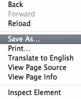

Camels are mythical animals from a far off land. The Uncommons are things that do things... filler filler filler.. very important.. powerful.. moving.. stuff.
Nokogiri is a ruby gem used for quickly scraping sites. We can use this tool to quickly seed databases for practice projects to make them seem slighly more real. The goal of this post is to quickly and easily allow you to scrape a page for most information. The example I am giving involves getting all the categories on the Craigslist homepage which fortunately fall in a ".txt" class.
The first step is installing the nokogiri gem which is easy enough by entering the following into the command line.
gem install nokogiri
After that you need to download the entire homepage you will use. The easiest way to do this is right clicking on the link to any site and scrolling down to Save As.

This will download all the CSS and Javascript of a site as well which may be valuable in other instances but for this purpose you can just delete the folder that comes with the save. All we need is the .html file.
Save the html locally as something like clisthomepage.html .
Next, in your ruby file require nokogiri by typing.
require 'nokogiri'
Then define the doc we will scrape using the following command.
doc = Nokogiri::HTML(File.open('clisthomepage.html'))
Now we can start manipulating the document. Since I want to get the categories out of it I will define a category array.
category_array = []
Then using the doc search command I will find all the .txt class items and pump their .inner_text into my new array.
doc.search('.txt').map { |text| text_array.push(text.inner_text)}
All set, I now have a category_array with 207 category strings I can use to seed my database.
Good luck out there.